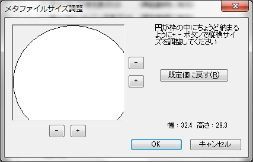
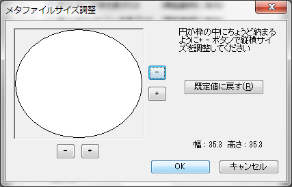

FAQ
良く寄せられる質問に関する回答を纏めています
Q1.クリップボードにコピーした画像で右端、下部分が切れてしまうんだけど
A:メタファイルサイズを調整することができます。
[オプション] ⇒ [「その他」タブ] ⇒ [メタファイルサイズ] でメタファイルサイズを調整するダイアログボックスが表示されます。 クリップボードコピーで画像が切れる場合は、このダイアログに秒がされている円が、次のようにすべて表示されていない状態になっているはずです。

このダイアログで図のように円がちゃんと描画できるように右と下の[+][-]ボタンをクリックして調整して下さい。

Q2.メタファイル形式で出力したEMFファイルで右端、下部分が切れてしまうんだけど
A:Q1と同様の方法で解消することができます。